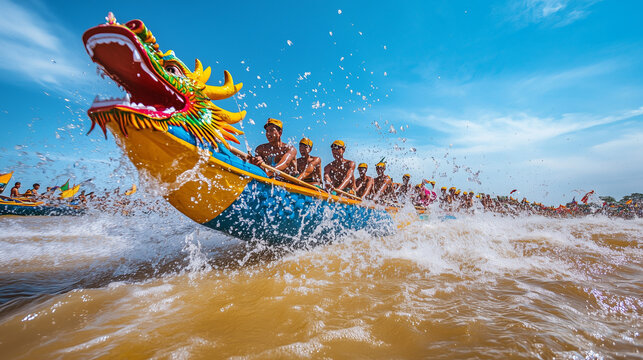
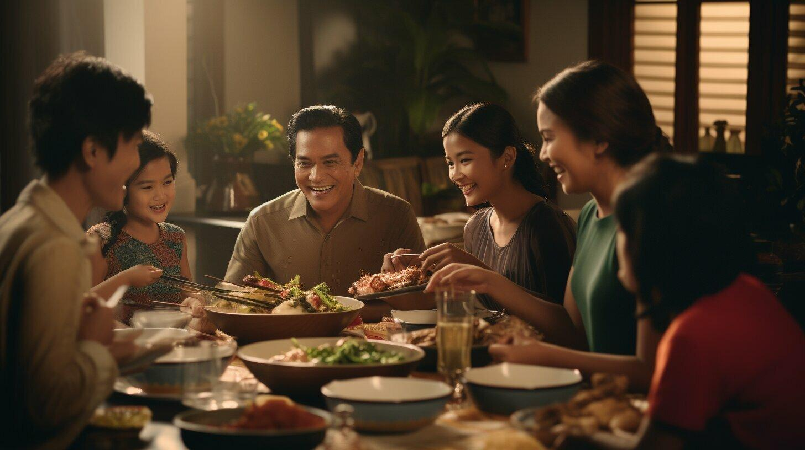

Water Festival
The Water Festival is held near the rivers and includes boat races, music, and lights. It celebrates the changing direction of the Tonle Sap River and the importance of water in daily life.

Khmer New Year
Khmer New Year is a major holiday with family gatherings, games, and visits to temples. Many people clean their houses and start fresh for the new year.

Pchum Ben
Pchum Ben is a religious festival where families remember and honor their ancestors by visiting pagodas and offering food.